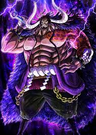

Four Emperor of The Sea
 Started from a weak hometown boy geared only with a sheer willpower rose to be one of the emperor
Started from a weak hometown boy geared only with a sheer willpower rose to be one of the emperor
 Nicknamed Red-Hair Shank "killer of the Observation Haki" sends chill down to the spine even to the like of admiral.
Nicknamed Red-Hair Shank "killer of the Observation Haki" sends chill down to the spine even to the like of admiral.
Coupled with two of the strongest devil fruit ever recorded, Blackbeard is a force to be reckoned.

Kaido of the Thousand Beast "The Strongest Creature", "if it's 1 on 1 always bet on Kaido"